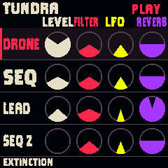

A PREHISTORIC WESTERN INSTRUMENT
THE NIGHT
HAS TEETH.
Deep synths. Towering drums.
A world waiting for your lead.
NIGHTCLAW / M-VAVE FM-1
01 / PLAY IN THE BROWSER
Your midnight expedition.
Sound starts only when you press Start audio.
The FM-1 screen

Ready when you are.The actual NightClaw firmware, running locally.
Shape the sound
K1 — K4More sound pages
Manual is the startup default. Q–I trigger the eight creatures.
Select a track, choose its voice, then shape it with the four controls.
Play your Lead
Click and hold the keys, use touch, or enable your computer keyboard.
About this browser instrument & credits
This player compiles NightClaw’s firmware UI, project storage and sound engine to WebAssembly. The browser controls edit the same parameters; the FM-1’s physical hardware and two-core scheduling are simulated. Sound is generated locally, not streamed from a recording. Browser performance does not measure FM-1 CPU load.
Based on NACHTFAHRT/Felucca and Paleotone. Code: GPL-3.0. Taiko samples: CC BY-SA 4.0 credits. Fonts: Clayborn and Barlow.
02 / THE VISUAL FIELD GUIDE
Know your instrument.
For the browser and your physical FM-1.
The shortcuts worth knowing.
PRESETS
Choose a scene.
SELECT
On Home, choose a track.
ALGORITHM
Choose that track’s voice or drum beat.
K1 · K2 · K3 · K4
Control the four displayed parameters.
GLO · HOLD ½ SEC
Save edits, then release. A short tap opens Setup.
PLAY / REC
Play or rest / tap to toggle Hold.
The button printed SAVE opens sound pages. To save edits on the FM-1, hold GLO for about half a second, then release. Holding to about 1.5 seconds resets the current scene.